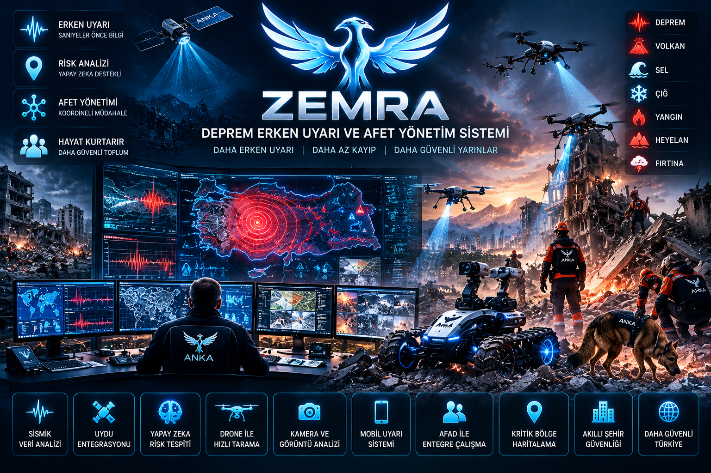

01 · MOBİLİTE
ANKA HYDRA
Yeni nesil temiz enerji ve akıllı araç ailesi. Binek, SUV, performans, ticari, VAN, BUS, ambulans, motosiklet ve diğer mobilite kategorilerine yönelik bir platform konsepti.
ANKA PROJECTS; farklı teknoloji alanlarındaki projeleri tek çatı altında tanıtan ve geliştirme vizyonunu paylaşan bağımsız proje platformudur.
Projeleri GörSiteye giren ziyaretçinin her projenin ne olduğunu ilk bakışta anlayabilmesi için her proje kendi görseli ve kısa tanımıyla sunulur. Hassas teknik ayrıntılar ve patent stratejisi açık edilmez.
Yeni nesil temiz enerji ve akıllı araç ailesi. Binek, SUV, performans, ticari, VAN, BUS, ambulans, motosiklet ve diğer mobilite kategorilerine yönelik bir platform konsepti.

Hareket kısıtlı bireylerin yürüme ve günlük yaşam desteğine yönelik nöromüsküler destek ve giyilebilir teknoloji projesi.

Mevcut dizel motorlarda verimlilik, çekiş, emisyon ve işletme hedefleri üzerine geliştirilen motor optimizasyon projesi.

Akıllı sulama, hedefli gübreleme, uzaktan takip ve kaynak verimliliği odağında geliştirilen akıllı tarım projesi.

Deprem erken uyarı ve afet farkındalığı için sensör, iletişim ve merkezi izleme yaklaşımını bir araya getirmeyi amaçlayan proje.

Çığ riskinin izlenmesi, analiz edilmesi ve erken uyarı mekanizmalarıyla desteklenmesine yönelik konsept.

Yağış, su seviyesi, debi ve çevresel veriler üzerinden taşkın riskinin izlenmesi ve erken uyarı yaklaşımı.

Yanardağ aktivitesinin sensörler, gözlem ve veri analiziyle takip edilmesine yönelik erken uyarı konsepti.

ANKA PROJECTS bünyesindeki proje fikirlerinin teknoloji vizyonu, proje geliştirme yaklaşımı ve tanıtım çalışmalarını yürüten sorumlu.
Bu web sitesi projelerin genel tanıtımı amacıyla hazırlanmıştır. Patent başvurularını, fikri mülkiyet haklarını veya ticari sır niteliğindeki teknik ayrıntıları zedeleyebilecek hassas bilgiler bilinçli olarak paylaşılmaz.